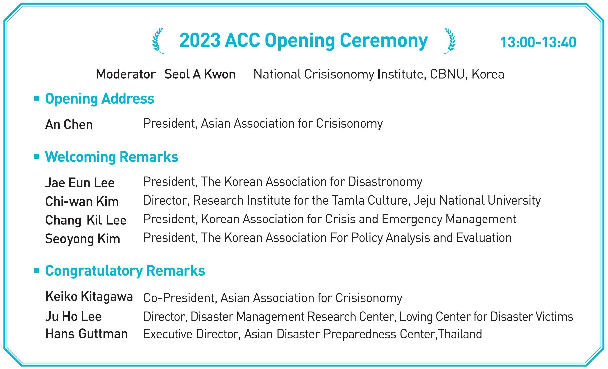

| 2023. 7. 19.(The 1st Day) | |||
| Registration & Reception | 13:00 ~ 13:30 | ||
| Pre-Conference Ⅰ | 13:30 ~ 15:20 | ||
| [Carbon Neutrality Support Center] | |||
| Moderator | Jae Eun Lee [Chungbuk National University, Korea] | ||
| Presenter | Yun Jeong Cha [Cheongju Carbon Neutrality Support Center, Korea] A Just Transition to a Carbon-Neutral Society to Respond to the Climate Crisis-Centered on the Workers |
Download File | |
| Dochul Pyun [Daegu Carbon Neutrality Center, Korea] Carbon Neutral Capacity Enhancement in Daegu Metropolitan City |
|||
| Byeong-Mu Kim [Jeju Carbon Neutrality Research & Support Center, Korea] Operational Status and Deveopment Plan of the Jeju Carbon Newutrality Research & Support Center |
|||
| Discussants | Muhammad Azam [PMAS Arid Agriculture University, Rawalpindi, Pakistan] Seol A Kwon [Cheongju Carbon Neutrality Support Center, Korea] Bonjun Koo [Yokohama National University, Japan] Junwon Lee [Jeju Carbon Neutrality Research & Support Center, Korea] Jongil Na [Kwansei Gakuin University, Japan] Hyun Soo Park [Cheongju Carbon Neutrality Support Center, Korea] |
||
| Coffee Break | 15:20 ~ 15:30 |
||
| Pre-Conference Ⅱ | 15:30 ~ 17:30 | ||
| Moderator | Jae Eun Lee [Cheongju Carbon Neutrality Support Center, Korea] | ||
| Presenter | Ju Ho Lee [Sehan University, Korea] Sung Su Lee [Association of Business Continuity & Disaster Mitigation, Korea] Deawon Jang [Disaster & Safety Research Institute, LIG System Co., Ltd., Korea] Tae Jung Song [KITValley Co., Ltd., Korea] |
||
| Discussants | Gyum Hun Kim [Chungbuk National University, Korea] Eun Joung Song [Association of Business Continuity & Disaster Mitigation, Korea] Jong Bin Kim [KITValley Co., Ltd., Korea] |
||
| Reception & Welcoming Party | 18:00 ~ 20:30 |
||
| 2023. 7. 20.(The 2nd Day) | |||
| Registration & Reception | 09:10 ~ 09:30 | ||
| Session Ⅰ | 09:30 ~ 10:30 | ||
| Section 1 - English | |||
| Moderator | Keiko Kitagawa [Seitoku University, Japan] | ||
| Presenter | Seol A Kwon [Chungbuk National University, Korea] Hyun Soo Park [Chungbuk National University, Korea] A Study on GIS-Based Spatial Analysis of Emergency Response for Disaster Management: Focusing on Seoul |
Download File | |
| Jun Ho Choi [Chungbuk National University, Korea] A study on the designation of the agricultural sector as national core infrastructure and political direction for food security in Korea |
Download File | ||
| Ke Zhang [Chungbuk National University, Korea] Evaluation of Operational Capability of Disaster and Emergency Management Resources Using AHP |
Download File | ||
| Discussants | Muhammad Azam [PMAS Arid Agriculture University, Rawalpindi, Pakistan] Da Young Kim [Chungbuk National University, Korea] Hwang Woo Noh [Hanbat National University, Korea] |
||
| Section 2 - Korean | |||
| Moderator | Jung Wook Moon [Korea Information Society Development Institute, Korea] | ||
| Presenter | Seoyong Kim [Ajou University, Korea] Sohee Kim [Ajou University, Korea] Analyzing Determinants of Acceptability of High-Level Nuclear Waste Disposal Facility: Exploring Conditional Acceptance |
Download File | |
| In Seok Seo [Anyang University, Korea] Min Sun Song [Valdosta State University, USA] The Relationship between Policy Instruments and Organizational Exits in a Pandemic Situation-The Mediating Roles of Trust and Leadership |
Download File | ||
| Discussants | Jong Soo Park [Sookmyung Women's University, Korea] Ju Kyong Kim [Jeju National University, Korea] |
||
| Section 3 - Korean | Disaster Management and Specialization | ||
| Moderator | Youngsik Kim [Seowon University, Korea] | ||
| Presenter | Ju Ho Lee [Disaster Management Research Center, Loving Center for Dasaster Victims, Korea] Current Status and Challenges of Disaster and Safety Management for Multicultural Families |
||
| Min Sang Cho [Silla University, Korea] A Study on the Disaster Capability Improvement Plan for Field Police Officers |
|||
| Sung Soo Byun [Daejeon-Sejong Research Institute, Korea] A Study on the Invigorating of Disaster Recovery Resource Sharing |
Download File | ||
| Discussants | Byoungjae Lee [Korea Research Institute for Human Settlements, Korea] Eun Young Ryu [Dong-A University, Korea] Yun Jeong Cha [Chungbuk National University, Korea] |
||
| Section 4 - Korean | Korean Climate Crisis & Carbon Neutrality | ||
| Moderator | Jae Eun Lee [Chungbuk National University, Korea] | ||
| Presenter | Yeon Soo Park [Chungbuk National University, Korea] Analysis of Population Structure in Rural Areas -Focusing on the case of Boeun-gun- |
||
| Woo Yeom [Chungbuk National University, Korea] Cooperation System for the Realization of Carbon Neutrality |
Download File | ||
| Yeon Jun Kim [Chungbuk National University, Korea] A Study on the Perception of Carbon Neutrality to Overcome the Climate Crisis; Focusing on Chungcheongbuk-do |
Download File | ||
| Discussants | Hyun Soo Park [Chungbuk National University, Korea] Yun Jeong Cha [Chungbuk National University, Korea] Bonjun Koo [Yokohama National University, Japan] |
||
| Coffee Break | 10:30 ~ 10:40 |
||
| Session Ⅱ | 10:40 ~ 12:00 | ||
| Section 1 - Korean | Efficient Operation of Disaster Management Resources | ||
| Moderator | Jae Eun Lee [Chungbuk National University, Korea] | ||
| Presenter | Gyum Hun Kim [Chungbuk National University, Korea] Optimization of Disaster Management Resource Logistics: Stockpiling and Sharing Economy |
||
| Hyun Jeong Seo [KITValey Co., Ltd., Korea] Disaster Risk and Resource Management System: Focus on the Efficient Operation and Management |
Download File | ||
| Ju Ho Lee [Sehan University, Korea] The Operation Model of Disaster Prevention Base for Disaster Recovery and Relief Services |
|||
| Discussants | Yun Jeong Cha [Chungbuk National University, Korea] Hyun Soo Park [Chungbuk National University, Korea] Linpei Zhai [chungbuk National University, Korea] |
||
| Section 2 - Korean | |||
| Moderator | Seoyong Kim [Ajou University, Korea] | ||
| Presenter | Se Hyeok Jeon [Ajou University, Korea] Seoyong Kim [Ajou University, Korea] Determinants of Receptivity to Large-scale Offshore Wind Energy by Residence: Focusing on the Moderating Effects of Conflict Perception |
Download File | |
| Joo Sung Hwang [Ajou University, Korea] Seoyong Kim [Ajou University, Korea] The Role and Importance of Experience on Acceptance of Solar Power Plants |
Download File | ||
| Ran Hee Jeong [Chungbuk National University, Korea] Collaborative Administration and Leadership Analysis Affecting the Success of Collaborative Emergency Management |
Download File | ||
| Discussants | Yo Sang Ham [Daegu University, Korea] Bonjun Koo [Yokohama National University, Japan] |
||
| Section 3 - Korean | |||
| Moderator | Jun Pyo Kim [Jeju National University, Korea] | ||
| Presenter | June Hee Kwon [California State University, USA] Asylum Seekers, Asylum Workers - The Neoliberal Humanitarianism of the Humanitarian Resident Visa in South Korea |
Download File | |
| Miyeon Ko [Jeju National University, Korea] Asylum Seekers in the Blind Spots of State-led Crisis Management: Institutionalization of South Korea's Judicial Interpreting System and Its Missing Blocks |
Download File | ||
| Hyeon Ju Yeom [Jeju National University, Korea] Rupture and Shifts in refugee norms: Focusing on the civic experience of Yemeni refugees in Jeju in 2018 |
Download File | ||
| Discussants | Young Pyo Seo [Jeju National University, Korea] Jin Gu Kang [Jeju National University, Korea] Jin Sun Kim [Jeju National University, Korea] |
||
| Section 4 - English [Online] | |||
| Moderator | Muhammad Azam [PMAS Arid Agriculture University, Rawalpindi, Pakistan] | ||
| Presenter | Gajendra Sharma [Kathmandu University, Dhulikhel, Nepal] Developing and Valdating Internet of Things(IoT) Based Solution for Natural Disaster Management |
||
| Fiaz Hussain [PMAS Arid Agriculture University Rawalpindi, Pakistan] Impacts of Climate Change on Agricultural Water Management and Adaptation- A Case of Pakistan |
Download File | ||
| Muhammad Naveed Anjum [PMAS Arid Agriculture University Rawalpindi, Pakistan] Climate Change in Northern Pakistan: Insights from Extreme Temperature Indices |
Download File | ||
| Ghulam Rasool [PMAS Arid Agriculture University Rawalpindi, Pakistan] Impacts of Climate Change on Rain Water Availability in Pothwar Region of Pakistan |
Download File | ||
| Discussants | Tahir Iqbal [Faculty of Agricultural Engineering and Technology, PMAS Arid Agriculture University Rawalpindi, Pakistan] Min Sun Song [Valdosta State University, USA] Kushum Shakya [Tribhuvan University, Nepal] |
||
| Lunch & Coffee Break | 12:00 ~ 13:00 |
||
|  | - |
| - | |
| - | |
| - | |
| - | |
| - | |
| Download File | |
| - | |
| - | |
| Download File | |
| Download File | |
| Download File | |
| Download File | |
| - | |
| - | |
| Download File | |
| Download File | |
| - | |
| - |
| Session Ⅲ | 13:40 ~ 14:50 | ||
| Culture & Disaster | |||
| Chosun University Disaster Humanities & Chinese Academy of Sciences Huisuk Kang [Chosun University, Korea] A Study of Chinese Diaspora and Disaster Culture in the Ming and Qing Dynasties |
Download File | ||
| An Chen [President, Asian Association for Crisisonomy] | |||
| Coffee Break | 14:50 ~ 15:00 |
||
| Session Ⅳ | 15:00 ~ 16:20 | ||
| Jae Eun Lee [Cheongju Carbon Neutrality Support Center, Korea] Future Research Directions of Disastronomy in the Climate Crisis Era |
Download File | ||
| An Chen [Chinese Academy of Sciences, China] Universal Risk Analysis Model and Application |
Download File | ||
| Keiko Kitagawa [Seitoku University, Japan] The history of natural disasters and risk management: A common understanding of the definitions in al aspects |
Download File | ||
| Coffee Break | 16:20 ~ 16:40 |
||
| Session Ⅴ | 16:40 ~ 18:00 | ||
| Muhammad Azam [PMAS Arid Agriculture University, Rawalpindi, Pakistan] Flood Assessment and Damages for Swat River Watershed of Pakistan |
Download File | ||
| Kushum Shakya [Tribhuvan University, Nepal] A Sustainable Future: Addressing the Climate Crisis and Green Economy |
Download File |
| 2023. 7. 21.(The 3rd Day) | |||
| Registration & Reception | 10:00 ~ 10:30 | ||
| Session Ⅵ | 10:30 ~ 12:00 | ||
| Section 1 - Korean | |||
| Moderator | Gi Geun Yang [Wonkwang University, Korea] | ||
| Presenter | Joo Young Koo [Yonsei University, Korea] A Study on the Phenomenon of Performance Paradox in the Management of Disasters and Safety |
||
| Woo Ri Shin [Chungnam Institute, Korea] Seung Hee Ko [Chungnam Institute, Korea] A Study on the Fire Prevention and Response of Fishing Boats |
|||
| Chang Yeol Park [Jeju Research Institute, Korea] Analysis of the Cause of Life Safety Accidents Using text Mining Technique |
|||
| Discussants | Seong Cho [Wonkwang University, Korea] Bum Joon Park [Konyang University, Korea] Won Hee Chung [Konyang University, Korea] |
||
| Section 2 - English | |||
| Moderator | Ye Na Choi [Chungbuk National University, Korea] | ||
| Linpei Zhai [Chungbuk National University, Korea] Jae Eun Lee [Chungbuk National University, Korea] Understanding and Building Community Disaster Resilience: Perspectives from Different Types of Communities |
Download File | ||
| Wei Lu [Chungbuk National University, Korea] Improvement of Government Leadership for Climate Crisis Response - Focusing on New Media Communication |
Download File | ||
| Mengyuan Lu [Chungbuk National University, Korea] Natural Disaster Management: Effective Organizational Leadership |
Download File | ||
| Discussants | Tae Seop Yoon [Chungbuk National University, Korea] Ji Soo Kim [Korea Research Institute for Local Administration, Korea] Da Young Kim [Chungbuk National University, Korea] |
||
| Section 3 - Korean | Implication of Korea Security Index for Local Safety Assessment | ||
| Moderator | Hwang Woo Noh [Hanbat National University, Korea] | ||
| Seol A Kwon [Chungbuk National University, Korea] Analyze Time Series Changes in the Korea Security Index |
Download File | ||
| Hyun Soo Park [Chungbuk National University, Korea] Study the Difference Between Quantitative and Qualitative Indicators of the Korea Security Index |
Download File | ||
| Young Jun Kim [Hanbat National University, Korea] A Study on the Direction of Disaster Prevention Design for Creating Child - Friendly Urban Environments |
Download File | ||
| Discussants | Eun Young Ryu [Dong-A University, Korea] Jun Ho Choi [Chungbuk National University, Korea] |
||
| Section 4 - Korean | Local Governanace and Disaster Response | ||
| Moderator | Chang Kil Lee [Incheon National University, Korea] | ||
| Jeongmi Beak [Incheon National University, Korea] Disaster Response and the Role of Communities in the Region |
Download File | ||
| Sangkyu Rheem [National Disaster Management Research Institute, Korea] The Feature's of Korean Societal Disaster Management and the MOIS's Challenges |
Download File | ||
| Yonghoo Lee [Incheon National University, Korea] Hyerin Jin [Incheon National University, Korea] A Comprehensive Study on the Case of Declaring Special Disaster Zones in Korea |
Download File | ||
| Discussants | Eunjin Hwang [Jeju National University, Korea] Min Sang Cho [Silla University, Korea] Yeeun Jung [Chungnam Institute, Korea] |
||
| Lunch & Coffee Break | 12:00 ~ 13:30 |
||
| Session Ⅶ | 13:30 ~ 15:10 | ||
| Section 1 - English | |||
| Moderator | An Chen [Chinese Academy of Sciences, China] | ||
| Zhuo Yi Huang [Xihua University, China] Mechanism of Hot Work Accidents in China and Response Mechanism Design |
Download File | ||
| Ya Nan Chen [Sino-Danish College, UCAS, China] Study on the identification of key impact factors of integrated natural disaster risk |
Download File | ||
| En Fang Qiang [Tianjin Normal University, China] Digital Governance and Public Values in Fighting COVID-19 |
Download File | ||
| Discussants | Keiko Kitagawa [Co-President, Asian Association for Crisisonomy] Yu Yanhong [Tianjin Normal University, China] Yuxhuo Qin [Chungbuk National University, Korea] |
||
| Section 2 - English [Online] | |||
| Moderator | Keun Ho Ryu [Chungbuk National University, Ton Duc Thang University, and Chiang Mai University] |
||
| Nguyen Thuy Vien Minh [Faculty of Environment and Labor Safety, Vietnam] Potential of mangrove forest in adaptation to climate change in Mekong Delta |
Download File | ||
| TRAN THI PHUONG QUYNH [Faculty of Environment and Labor Safety, Ton Duc Thang University, Ho Chi Minh city, Vietnam] Bioenergy in a changing climate |
Download File | ||
| Altangerel Bat-Orshikh [National University of Mongolia, Mongolia] Bat-Erdene Gantuya [National University of Mongolia, Mongolia] The impact of the covid-19 pandemic on the foreign trade deficit of Mongolia |
Download File | ||
| MoonSoo Lee [Public and Nonprofit Management, The University of Texas at Dallas, USA] Sociotropic Threat and Tolerance on Minorities: the Mediating Effects of Subjective Well-being, Trust in Government and Society |
Download File | ||
| Discussants | Jun Ho Choi [chungbuk National University, Korea] Byoung Jae Lee [Korea Research Institute for Human Settlements, Korea] Lin Dong [Chungbuk National University, Korea] |
||
| Section 3 - English | |||
| Moderator | Jang Hee Lee [Chungbuk National University, Korea] | ||
| Ying Hua Chen [Jiangsu University, China] Why Stampedes Always Happen: Causes Analysis Based on Qualitative Comparison Method |
|||
| Shou Hao Zhang [Institutes of Science and Development, Chinese Academy of Sciences, China] Assessment of Regional Emergency Performance Capabilities in China Based on DIIS Method |
Download File | ||
| Discussants | Linpei Zhai [chungbuk National University, Korea] Zhenyun Jin [Chungbuk National University, Korea] |
||
| Coffee Break | 15:10 ~ 15:20 |
||
| Session Ⅷ | 15:20 ~ 17:00 | ||
| Section 1 - Korean | |||
| Moderator | Byoung Jae Lee [Korea Research Institute for Human Settlements, Korea] | ||
| Xiangyan Jin [Chungbuk National University, Korea] The Impact of China's Carbon Neutrality on Natural Disaster Risk Management: Perspectives on Sustainable |
Download File | ||
| Xiangnan Lin [Chungbuk National University, Korea] Development of China's New Evergy Vehicle Industry in the Context of Carbon Neutrality |
|||
| Soon-Joo Wang [Hallym University, Korea] Approaching the Crowd Crush: in Case of Itaewon Disaster, 2022 in Korea |
Download File | ||
| Discussants | Linpei Zhai [chungbuk National University, Korea] Jun Ho Choi [Chungbuk National University, Korea] Wei Lu [Chungbuk National University, Korea] |
||
| Section 2 - Korean | |||
| Moderator | En Fang Qiang [Tianjin Normal University, China] | ||
| Yuzhuo Qin [Chungbuk National University, Korea] Analyzing China's International Rescue Capabilities through the Turkiye Earthquake |
Download File | ||
| Lin Dong [Chungbuk National University, Korea] Visual risk Communications in the Climate Crisis |
Download File | ||
| Zhenyun Jin [Chungbuk National University, Korea] Local government governance of heat waves in the context of global warming |
|||
| Discussants | Yun Jeong Cha [chungbuk National University, Korea] Gyum Hun Kim [Chungbuk National University, Korea] Yuzhuo Qin [Chungbuk National University, Korea] |
||
| Section 3 - Korean [Online] | |||
| Moderator | Muhammad Azam [PMAS Arid Agriculture University, Rawalpindi, Pakistan] | ||
| Hyun Jung Kim [National Disaster Management Research Institute, Korea] A Study on Disaster Management Investment and Resilience Enhancement |
Download File | ||
| Jin Hao Li [Chungbuk National University, Korea] Disaster Emergency Resources Management Improvement Plan in China |
Download File | ||
| Sun Gyu Choi [Chungbuk National University, Korea] A Comparative Study on Military Climate Crisis Management Policies in Korea and the United States |
Download File | ||
| Discussants | Jong Il Na [Kwansei Gakuin University, Japan] Hyun Soo Park [Chungbuk National University, Korea] |
||
| Section 4 - Korean | |||
| Moderator | Gyum Hun Kim [Chungbuk National University, Korea] | ||
| Jong Hyuk Kim [Chungbuk National University, Korea] A Case Study of Public Crisis Management Communication Failure Based on Image Recovery Theory: Based on the analysis of media reports on public responses at the time of the Itaewon disaster |
Download File | ||
| Bat-Erdene Ganchimeg [Chungbuk National University, Korea] A Study of ecosystem restoration to prevent desertifi cation and yellow dust in Mongolia |
Download File | ||
| Discussants | Jun Ho Choi [Chungbuk National University, Korea] Yeon Soo Park [Chungbuk National University, Korea] |
||
| Closing Ceremony | 17:00 ~ 18:00 | ||